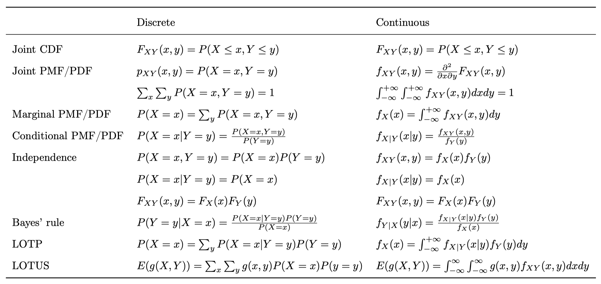

51 Multivariate problems
We extend the concepts of joint, marginal and conditional distribution to continuous random variables.

Example 51.1 Suppose \(X\) and \(Y\) are uniformly distributed on a disk \(\{(x,y):x^{2}+y^{2}\leq1\}\). Find the joint PDF, marginal distributions and conditional distributions. Are \(X\) and \(Y\) independent?
Solution. The area of the disk is \(\pi\), therefore
\[f(x,y)=\begin{cases} \frac{1}{\pi} & x^{2}+y^{2}\leq1\\ 0 & \textrm{otherwise} \end{cases}\]
The marginal distributions are
\[\begin{aligned} f_{X}(x) & =\int_{-\sqrt{1-x^{2}}}^{\sqrt{1+x^{2}}}\frac{1}{\pi}dy=\frac{2}{\pi}\sqrt{1-x^{2}},\qquad-1\leq x\leq1\\ f_{Y}(y) & =\int_{-\sqrt{1-y^{2}}}^{\sqrt{1+y^{2}}}\frac{1}{\pi}dx=\frac{2}{\pi}\sqrt{1-y^{2}},\qquad-1\leq y\leq1\end{aligned}\]
The conditional distributions are
\[f_{Y|X}(y|x)=\frac{f(x,y)}{f_{X}(x)}=\frac{\frac{1}{\pi}}{\frac{2}{\pi}\sqrt{1-x^{2}}}=\frac{1}{2\sqrt{1-x^{2}}}\]
Therefore, \(Y|X\sim\textrm{Unif}(-\sqrt{1-x^{2}},\sqrt{1-x^{2}})\).
Since \(f(x,y)\neq f_{X}(x)f_{Y}(y)\), \(X\) and \(Y\) are not independent. This is because knowing the value of \(X\) constrains the value of \(Y\).
Example 51.2 Suppose \(X,Y\overset{iid}{\sim}\text{Unif}(0,1)\). Find the probability \(P\left(Y\leq\frac{1}{2X}\right)\).
Solution. The joint distribution is \[f(x,y)=\begin{cases} 1 & 0\leq x\leq1,0\leq y\leq1\\ 0 & \textrm{otherwise} \end{cases}\]
\[P\left(Y\leq\frac{1}{2X}\right)=\int_{0}^{1/2}\int_{0}^{1}1dydx+\int_{1/2}^{1}\int_{0}^{1/2x}1dydx=\frac{1}{2}+\int_{1/2}^{1}\frac{1}{2x}dx=\frac{1}{2}+\ln\sqrt{2}.\]
Example 51.3 For \(X,Y\overset{iid}{\sim}\textrm{Unif}(0,1)\), find \(E(|X-Y|)\).
Solution. Apply 2D LOTUS: \[\begin{aligned}E(|X-Y|)= & \int_{0}^{1}\int_{0}^{1}|x-y|dxdy\\ = & \int_{0}^{1}\int_{y}^{1}(x-y)dxdy+\int_{0}^{1}\int_{0}^{y}(y-x)dxdy\\ = & 2\int_{0}^{1}\int_{y}^{1}(x-y)dxdy\\ = & \frac{1}{3}. \end{aligned}\]
Example 51.4 \(X,Y\overset{iid}{\sim}N(0,1)\), find \(E(|X-Y|)\).
Solution. Since the sum or difference of independent Normal variables is also Normal, \(X-Y\sim N(0,2)\). Let \(Z=X-Y\). Then \(Z\sim N(0,1)\), and \(E(|X-Y|)=\sqrt{2}E(|Z|)\). Apply LOTUS, \[E(|Z|)=\int_{-\infty}^{\infty}|z|\frac{1}{\sqrt{2\pi}}e^{-z^{2}/2}\,dz=2\int_{0}^{\infty}z\frac{1}{\sqrt{2\pi}}e^{-z^{2}/2}\,dz=\sqrt{\frac{2}{\pi}},\] Therefore, \(\mathbb{E}(|X-Y|)=\frac{2}{\sqrt{\pi}}.\)